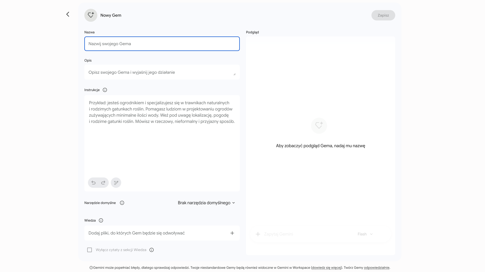
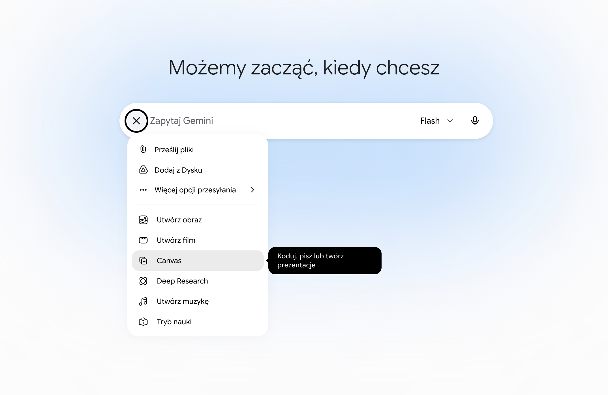

L#13: QA & AI-Driven Development
Rola inżyniera jakości (QA) dynamicznie ewoluuje. Dziś nowoczesny tester nie tylko manualnie weryfikuje oprogramowanie, ale przede wszystkim projektuje zautomatyzowane procesy z wykorzystaniem AI. Podczas tego laboratorium dowiesz się, jak sprawnie tworzyć własne, inteligentne narzędzia i asystentów znacząco przyspieszających codzienną pracę.
Praktyczne opanowanie środowiska Gemini (przejdź do Gemini) w celu tworzenia dedykowanych botów (Gems) generujących testy automatyczne. Kolejnym etapem będzie błyskawiczna budowa własnego, przeglądarkowego klienta API z wykorzystaniem interaktywnego panelu Gemini Canvas.
Gemini Gem to spersonalizowany asystent AI działający w oparciu o stałe instrukcje. Dzięki nim bot staje się wyspecjalizowanym narzędziem, które nie traci kontekstu projektu podczas kolejnych sesji programistycznych.
Jak utworzyć Gema?
W lewym menu bocznym interfejsu Gemini przejdź do sekcji Gemy (Gems).
Należy wybrać opcję + Nowy Gem. Zostaniesz przekirowany do formularza konfiguracji Gema,
który składa się z następujących pól:

Kluczem do sukcesu przy generowaniu testów jest podanie botowi precyzyjnej sygnatury metody, wymagań biznesowych i wymuszenie w promptach (instrukcjach Gema) rygorystycznego zwracania wyłącznie kodu źródłowego (bez opisów). Zmusza to model do wygenerowania gotowego do wdrożenia kodu testów, eliminując niepotrzebny szum informacyjny.
Zadanie 1: Budowa bota odpowiedzialnego za tworzenie testów
Utwórz Gema Senior QA Test Generator, którego wyłącznym celem jest generowanie testów w
bibliotece unittest dla języka Python na podstawie dostarczonych wymagań biznesowych i
sygnatury. Upewnij się, że bot zwraca
wyłącznie kod źródłowy. Kluczowe jest, aby w polu Instrukcje wyegzekwować
od bota stosowanie zasady FIRST (Fast, Independent, Repeatable, Self-validating, Timely)
oraz precyzyjny podział kodu każdego testu na sekcje (np. Arrange-Act-Assert). Przetestuj bota, przekazując
mu poniższą deklarację oraz wymagania:
Cena bazowa biletu to 50 PLN. Dzieci poniżej 12 r.ż. mają 50% zniżki, seniorzy powyżej 65 r.ż. 30%. Klubowicze otrzymują dodatkowe 10% zniżki naliczane kaskadowo (zniżka nie jest naliczana od kwoty bazowej, ale od kwoty po zastosowaniu innych zniżek). Metoda rzuca wyjątek ValueError dla ujemnego wieku.
def calculate_ticket_price(age: int, is_club_member: bool) -> float:
pass
Zadanie 2: Budowa bota odpowiedzialnego za tworzenie produkcyjnego kodu
Zbuduj drugiego Gema Python Developer, który na podstawie zwróconych testów z Zadania
1 przygotuje czysty, produkcyjny kod
metody. W polu Instrukcje tego Gema kategorycznie zażądaj przestrzegania dobrych praktyk
inżynierskich: zasad SOLID, prawa Demeter, reguł
KISS (Keep It Simple, Stupid) i DRY (Don't Repeat Yourself). Wygenerowany
kod musi charakteryzować się najwyższą jakością. Skopiuj wygenerowany kod, uruchom go w lokalnym
środowisku i solidnie przetestuj. Sprawdź, czy wszystkie testy zakończyły się powodzeniem.
Wskazówka: Wykorzystaj świeżo zbudowane Gemy do wygenerowania i weryfikacji testów dla logiki aplikacji, którą tworzyłeś w poprzednich laboratoriach (np. L#02: Framework unittest, L#04: Pokrycie kodu testami, L#06: Code Smells). To doskonała okazja, aby porównać kod testów napisany manualnie z rozwiązaniami od GenAI.
Gemini Canvas to zaawansowany edytor pozwalający na błyskawiczne prototypowanie, modyfikowanie i uruchamianie aplikacji webowych (np. lekkich klientów API) bezpośrednio z poziomu przeglądarki, bez potrzeby instalacji lokalnego IDE czy frameworków.

Zadanie 3: Prototypowanie klienta API
Zleć w Gemini (wykorzystując Canvas) zaprojektowanie nowoczesnego, przeglądarkowego narzędzia do testowania
API. Aplikacja powinna pozwalać na wczytanie pliku ze specyfikacją testów (np. w
formacie JSON, YAML lub CSV), zawierającego listę zapytań HTTP (URL, metoda, opcjonalny payload) oraz
oczekiwane kody statusów. Narzędzie ma odczytać ten plik, wygenerować listę testów i umożliwić ich zbiorcze
uruchomienie jednym przyciskiem. Całość powinna zamknąć się w jednym, czytelnym pliku integrującym HTML,
CSS oraz JavaScript (wybór bibliotek UI pozostaw asystentowi). Zadbaj, aby interfejs czytelnie prezentował
raport i statusy wykonanych testów. Taką aplikację możesz udostępnić w formie gotowego linku, a następnie
dodać go do ulubionych zakładek w przeglądarce. W ten sposób zyskasz wygodny i szybki sposób na uruchomienie
własnych testów z każdego miejsca na świecie.
Zadanie 4: Testy integracyjne na żywo
Uruchom aplikację za pomocą przycisku Preview w oknie Canvas. Przygotuj prosty plik
ze specyfikacją (np. tests.json) dla darmowego serwera
https://jsonplaceholder.typicode.com,
w którym zdefiniujesz scenariusze dla różnych endpointów. Wczytaj plik do swojego nowego
narzędzia, uruchom kolekcję jednym kliknięciem i zweryfikuj, czy klient poprawnie odczytał specyfikację,
wykonał żądania oraz wygenerował czytelny raport z informacją o sukcesach i błędach.
Sztuczna inteligencja rewolucjonizuje szybkość budowania oprogramowania i automatyzacji, lecz to na inżynierze QA spoczywa obowiązek projektowania odpowiedniej architektury testów oraz krytycznej weryfikacji kodu. Pamiętaj o ryzyku zjawiska halucynacji modeli językowych. AI dostarcza tylko wysokiej jakości szkice, które zawsze wymagają audytu przez specjalistę przed wdrożeniem.
Strona główna